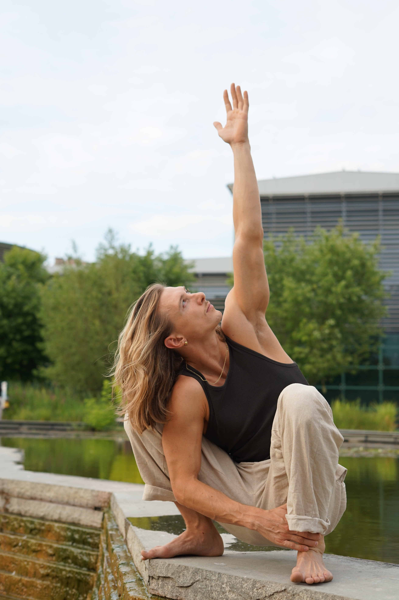
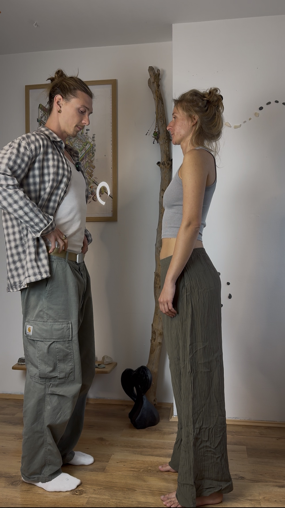
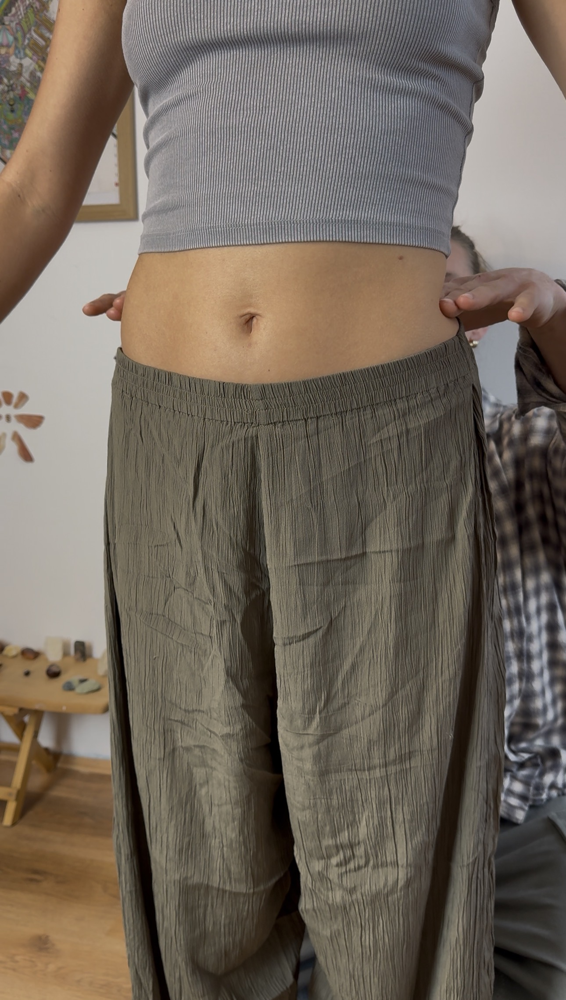
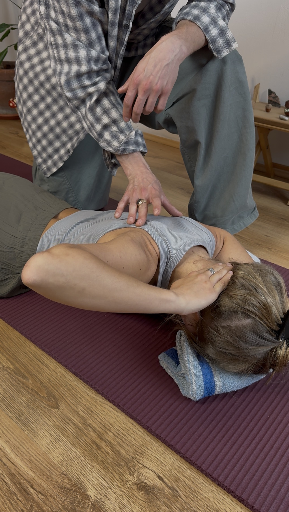
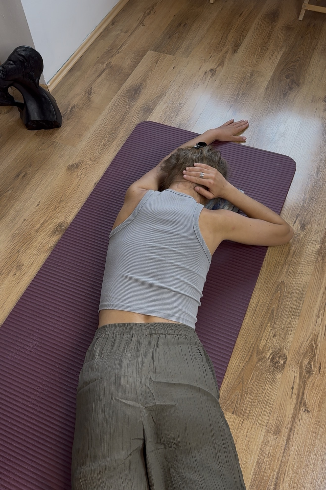

A medence a test alapja.
Ha nem optimális helyzetben áll, felborul az izomegyensúly. A test kompenzál, és a kompenzációk lánca egy ponton fájdalomhoz vezet — derékban, nyakban, vállban, csípőben vagy térdben.
Gyógytorna, masszázs, talán csontkovács is. Mindegyik segített egy kicsit — aztán visszajött. Mert a fájdalom helyét kezelték, nem az okát.

Ha nem optimális helyzetben áll, felborul az izomegyensúly. A test kompenzál, és a kompenzációk lánca egy ponton fájdalomhoz vezet — derékban, nyakban, vállban, csípőben vagy térdben.
Rendszerszintű felmérés és ok-alapú elemzés helyi kezelés helyett. Megérted, miért ott fáj, ahol fáj — és mi tartja fenn.
Mélyizomtornával helyreállítjuk az egyensúlyt, a mozdulatokat pedig addig ismételjük, amíg tudat alatt is jól működnek. Ez 90 napos folyamat, nem egy-egy alkalom.
Ennyi a lényeg. A részletekért görgess tovább — vagy beszéljük át a te helyzeted.
Időpontot foglalokAz a tompa, állandó fájdalom, ami sosem múlik el teljesen. Hosszú meetingek után fellángol, éjszaka felébreszt, hosszabb sétán kínoz.
Tenziós fejfájás, előrenyúló fejtartás, zsibbadásérzet a karban — és nulla vállmobilitás. Egy rossz mozdulat, és napokra kiesel.
A nem optimális medencehelyzet nemcsak a derekadban hagy nyomot. Csípőmerevség, térdfájás, zsibbadás a lábban — ugyanannak a rendszerproblémának a tünetei.
Ibuprofen reggel, gyulladáscsökkentő este — csak hogy kibírd a napot. Működik, amíg tart. De eltakarja a problémát, miközben az ok tovább dolgozik.
Gyógytorna, masszázs, csontkovács, YouTube-nyújtások. Mindegyik segít egy kicsit — aztán visszajön. Mert mindegyik a tünetet kezeli.
Tudod, hogy az ignorálás nem megoldás. Minden évben egy kicsit nehezebb visszarázódni — és egyre jobban aggaszt, mi lesz 10 év múlva.
Nem csak irodai munkáról van szó. Bárkit érinthet, aki sokat ül vagy áll, statikus testhelyzetben dolgozik, vagy egyoldalúan mozog — a fogorvostól az informatikusig.
A fájdalom szinte soha nincs ott, ahol a probléma forrása.
A test mindig a legkisebb ellenállás felé törekszik. Alkalmazkodik, kompenzál, megkerüli a hibát — és elvégzi a mindennapi feladatokat.
Egy bizonyos pont után azonban ezek az alkalmazkodások elváltozásokhoz vezetnek. A fájdalom ezeknek a jele.
Nem elnyomni kell.
Hanem helyreállítani a rendszer optimális működését.
A test statikai rendszer. Ha az alap — a medence — nem optimális helyzetben áll, az egész szerkezet kompenzál. A módszer ezért nem a tünetet kezeli, hanem a rendszert állítja helyre.

Részletes biomechanikai felmérés: medencehelyzet, tartás, aszimmetria, izomegyensúly.

Ha a medence — a testközéppont — nem optimális helyzetben áll, felborul az egész izomlánc.
Ebből logikusan következik, hogy miért ott fáj, ahol fáj, és mi áll a jelenlegi problémák mögött. Nem kell vakon csinálnod a gyakorlatokat: érteni fogod, mit miért csinálsz.

Mélyizomtornával helyreállítjuk az izomegyensúlyt, optimalizáljuk a medence helyzetét, és stabilizáljuk a törzset.

Minden fázishoz videós anyag készül rólad — otthon, önállóan, bármikor elvégezhető. Ahogy ismétled a mozdulatokat, újraírod a régi mozgásmintákat.
Az ismétléstől a helyes minta idővel tudat alatt is működik. Ezáltal sokkal tudatosabban fogsz kivitelezni minden mozdulatot — a hétköznapokban is.
2–3 hetente becsípődött a nyakam, olyan erősen, hogy napokra kiestem. Szakembertől szakemberig jártam, és mindent megcsináltam, amit mondtak.
A mentorom volt az első, aki nem ott kereste a hibát, ahol fájt. Pár hónappal később a fájdalom eltűnt. Azóta egyszer sem csípődött be a nyakam.
Építészként tanultam meg, hogy egy épület stabilitását az alapjai határozzák meg. A testnél ez az alap a medence. Ebből született a TestKözéppont Módszer.
Mozgás az identitásom. Ez ad energiát, tiszta fejet, egyensúlyt.
Mégis ott volt mindig a fájdalom. Hittem a szakembereknek — és évekkel később jöttem rá, hogy amit csináltam, az súlyosbította a problémát.
„Hiába voltam szálkás, hiába tudtam bármit megcsinálni a testemmel — ami ez alatt volt, az végtelenül gyenge és diszfunkcionális volt. A felszín rendben volt. A rendszer összeomlott.”
2 éve találtam meg a mentoromat. Mellette értettem meg először, hogy nem a fájdalmat kell kezelni, hanem azt kell megtalálni, ami miatt a test folyamatosan kompenzál.
A gyakorlatokat ma is minden nap elvégzem. Nem azért, mert muszáj, hanem mert tudom, hogy ezek tartják hosszú távon egyensúlyban a testemet. Amit másoknak tanítok, azt én magam is élem.
Ma már tudom, hogy nem volt velem semmi baj. Egyszerűen senki sem vizsgálta a teljes képet.
Sokáig azt hittem, egyedül vagyok ezzel. Ma már látom, hogy rengetegen élnek együtt visszatérő fájdalmakkal vagy feszülésekkel anélkül, hogy értenék, mi áll a háttérben. Ezért végzem ezt a munkát: nem gyors megoldásokat adok, hanem segítek megérteni a tested működését, megtalálni a probléma valódi okát, és olyan változást elérni, ami hosszú távon is megmarad.
Az ügyfeleim saját szavai, ahogy a visszajelző kérdőívben leírták.
„A fájdalom mára teljesen megszűnt. Egyáltalán nem fáj.”
„Az első változást 1 hét után vettem észre: egyszer sem rogytam térdre napközben.”
„A derékfájdalom elmúlt, jobb közérzet. A térdfájásom azóta se jött elő crossfit edzéseken.”
„Reményt, hogy a sok éves szenvedésből van kiút.”
„Súlyzós guggolásnál nem érzek fájdalmat a deréktájon.”
„Sokkal szebb tartásom van.”
„Erősödött a bal oldalam. Testérzet is párosult a felemássághoz, nem csak vizuálisan érzékeltem.”
„Egy fókuszált edzés program valódi változást tud hozni nagyon rövid idő alatt. (Ez számomra előtte hihetetlen volt.)”
„Erősebb hátizmok, kevesebbszer jönnek elő a tünetek.”
„Felfogtam melyik oldalamat kell erősíteni, pont az ellentéteset gondoltam magamtól.”
„Stabilitás a vállízületben.”
Ami könnyebb lett: „Kar fej felé emelés, húzódzkodás.”
Mind a négy csomag ugyanarra a módszerre épül — a különbség az, mennyi személyes kísérést kapsz a 90 nap alatt. A legtöbbeknek a heti kísérést ajánlom: a korai javulás után ugyanis könnyű elengedni a gyakorlást.
Önállóknak, akikben megvan a kellő motiváltság.
Ha magad is végigcsinálod, de kéthetente kell valaki, aki ránéz és korrigál.
Heti kísérés, folyamatos haladás.
Teljes kiszolgálás, maximális kényelem.
30 perc online: megismerjük egymást, átbeszéljük a helyzeted, és kiderül, tud-e segíteni a módszer.
Az első változásokat — könnyebb légzés, jobb testtartás-tudat, kisebb feszülés — legtöbben 2–3 héten belül érzik. Komolyabb, tartós fájdalomcsökkenés általában 4–6 héten belül jelentkezik. Mindez attól függ, mennyire következetesen végzed a gyakorlatokat otthon.
A hagyományos gyógytorna legtöbbször protokollalapú: adott diagnózishoz adott gyakorlatok. A TestKözéppont Módszer az egyéni biomechanikai elváltozásokból indul ki — megvizsgáljuk a medence elmozdulásait, az aszimmetriát, és arra szabott programot készítünk. A cél az, hogy megértsd a saját tested működését, ne csak csináld, amit mondanak.
Gerincsérvvel és porckorongproblémával is dolgoztam már sikeresen. Aktív, akut gyulladásos szakaszban vagy friss műtét után nem tudok segíteni — ott orvosi ellátás szükséges. Kétség esetén a konzultáción kiderül, megfelelő-e neked a program.
Kb. 90–120 perc. Először részletesen megbeszéljük a panaszaidat és az előzményeket. Ezután jön a biomechanikai felmérés — megnézzük a medence elmozdulásait, az aszimmetriát, a mozgásmintákat. Megérted, mi a gond és miért. Végül betanítjuk az első 4 hétre szóló gyakorlatokat, és felvesszük a videóanyagot.
Nyolc éven át küzdöttem krónikus derékfájással és visszatérő nyaki becsípődésekkel. A megoldást nem egy újabb kezelés hozta, hanem annak megértése, hogyan működik a test egészként. Építészként tanultam meg, hogy egy épület stabilitását az alapjai határozzák meg — a test ugyanígy működik: ha a központja, a medence kibillen, az egész rendszer megsínyli. Egy gyógytornász mentorálása mellett ebből született meg a TestKözéppont Módszer, ami anatómiai és biomechanikai alapokra épül, és nem a tüneteket fedi el, hanem a működést állítja helyre.
Adatkezelő: Farkas Levente (TestKözéppont), Budapest
Milyen adatokat gyűjtök?
Az ingyenes konzultáció foglalása során a Calendly platformon keresztül a következő adatokat adod meg: név, email cím, valamint a foglalási kérdésekre adott válaszok.
Mire használom?
Kizárólag a konzultáció megszervezésére és lebonyolítására.
Ki kezeli az adatokat?
A foglalási folyamatot a Calendly (calendly.com) kezeli saját adatkezelési szabályzata szerint. A konzultáció a Google Meet platformon zajlik.
Mennyi ideig tárolom?
Az adatokat a konzultáció lezárultát követő 1 évig tárolom, majd törlöm.
Milyen adatokat kezelek?
A feliratkozáskor megadott nevedet és email címedet. Ha válaszolsz egy hírlevélre, a válaszod tartalmát is.
Mire használom?
Kizárólag a TestKözéppont hírlevelének küldésére: kérdésekre, tartalmakra és a programjaimról szóló tájékoztatásra. Az adataidat nem adom át harmadik félnek, és nem használom másra.
Mi a jogalap?
A hozzájárulásod (GDPR 6. cikk (1) a) pont), amit a feliratkozáskor a jelölőnégyzet elfogadásával adtál meg. Ezt bármikor, indoklás nélkül visszavonhatod.
Hol tárolom?
Az adataid egy Supabase adatbázisban tárolódnak, amihez csak én (Farkas Levente) férek hozzá.
Meddig tárolom?
A leiratkozásodig vagy a hozzájárulásod visszavonásáig. Utána az adataidat törlöm.
Hogyan iratkozhatsz le?
Minden hírlevél alján van egy leiratkozási link: add meg az email címed, és a leiratkozás oldalon egy gombnyomással kész. Írhatsz Instagram DM-ben is (@testkozeppont). A címedet késedelem nélkül törlöm a listáról, és többet nem írok. A leiratkozási kérésed értesítése Google szolgáltatáson (Apps Script, Gmail) keresztül jut el hozzám.
Mit kérhetsz még?
Tájékoztatást arról, milyen adataid vannak nálam, ezek helyesbítését vagy törlését. Ha úgy érzed, hogy az adataidat nem megfelelően kezelem, panaszt tehetsz a Nemzeti Adatvédelmi és Információszabadság Hatóságnál (naih.hu).
Bármikor kérheted adataid törlését vagy a hírlevélről való leiratkozást a lenti elérhetőségen. Ez a tájékoztató nem minősül jogi tanácsadásnak.
Kapcsolat: a konzultáció foglaláson keresztül, vagy Instagram DM-ben: @testkozeppont